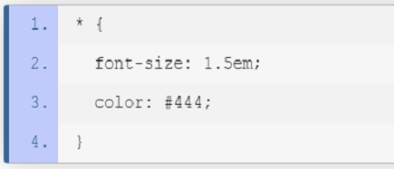
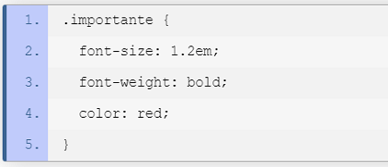

CSS (CASCADING STYLE SHEETS)
Es un lenguaje de diseño grafico que permite dar un toque visual a las paginas web o interfaces creadas en HTML,
permite editar atributos como el color de fondo, el tamaño e la fuente, bordes, margenes, tamaño de imagenes,
entre otros. De esta forma podemos crear paginas muy unicas y atractivas.
SELECTORES
Un selector es el medio para hacer una referencia a un grupo de uno o más elementos HTML,
con el fin de aplicar a éste un conjunto de declaraciones CSS. Existe una estructura con
la que debes cumplir para usar un selector y está compuesta por el selector seguido del
conjunto de declaraciones encerradas por llaves ("{}").

Selector Universal
Corresponde a todos los elementos en el documento
Frameworks CSS. (2014). Desarrollo Web. https://desarrolloweb.com/colecciones/frameworks-css

Selector de Tipo
Con este selector se pueden aplicar declaraciones a, por ejemplo,
todos los párrafos (p), todos los ítems de listas (li) o todos
los vínculos (a) de un documento.
Frameworks CSS. (2014). Desarrollo Web. https://desarrolloweb.com/colecciones/frameworks-css

Selector de ID
Corresponde con todos los elementos que tienen el valor
especificado en su atributo ID. Este atributo se declara
con el signo numeral ("#")
Frameworks CSS. (2014). Desarrollo Web. https://desarrolloweb.com/colecciones/frameworks-css

Selector de Clase
Es un concepto implementado por CSS que tiene como proposito
agrupar declaraciones y aplicarlas al elemento que queramos.
Esta clase se aplica mediante el atributo "class"
Frameworks CSS. (2014). Desarrollo Web. https://desarrolloweb.com/colecciones/frameworks-css
ATRIBUTO STYLE
Es la forma más fácil y directa de aplicar declaraciones de estilo a un elemento.
Este atributo puede tener como contenido, cualquier número de declaraciones de
estilo, separadas unas de otras por un punto y coma (";").

Tipo Style
Frameworks CSS. (2014). Desarrollo Web. https://desarrolloweb.com/colecciones/frameworks-css